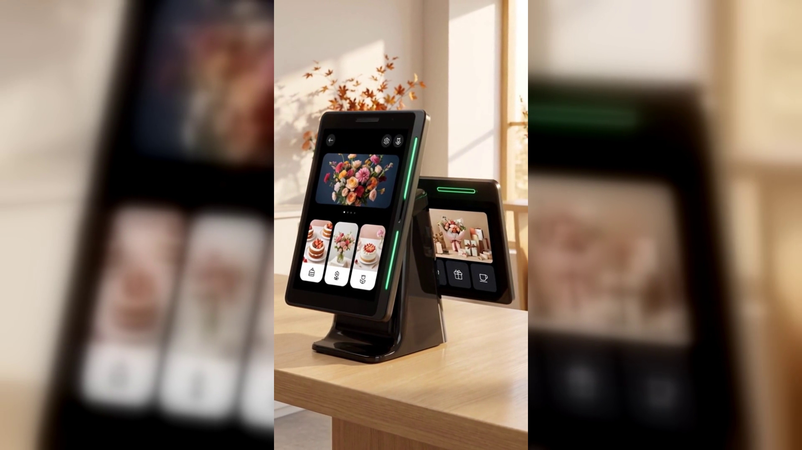

새 메뉴를 시작했는데 손님이 모릅니다 — 매장 소식을 손님 화면에 띄우는 방법
새 메뉴를 준비하고, 이벤트를 열고, 휴무일을 정합니다. 그리고 A4 용지에 인쇄해 계산대 옆이나 출입문에 붙입니다. 그런데 며칠이 지나도 새 메뉴를 찾는 손님이 없습니다. 이벤트를 아느냐고 물으면 몰랐다고 합니다. 사장님이 준비를 안 한 것이 아니라, 알린 방법이 손님에게 닿지 않은 것입니다.
■ 안내문이 안 읽히는 이유
손님이 매장에 있는 시간을 떠올려 보면 답이 보입니다. 들어와서 메뉴를 고르고, 주문하고, 자리에 앉고, 먹고, 계산하고 나갑니다. 이 과정에서 손님의 시선은 메뉴판, 자기 휴대폰, 같이 온 사람, 그리고 음식에 머뭅니다. 벽에 붙은 종이는 이미 매장 배경의 일부가 되어 버립니다. 특히 자주 오는 단골일수록 매장 풍경이 익숙해져서 새로 붙은 종이 한 장을 알아보지 못합니다.
반대로 손님이 반드시, 그리고 확실하게 화면을 들여다보는 순간이 하루에 한 번씩은 있습니다. 계산할 때입니다. 금액을 확인하고, 카드를 대고, 결제가 끝나는 것을 보는 그 짧은 시간 동안 손님의 시선은 카운터 앞으로 모입니다. 매장 소식을 알릴 자리가 있다면 바로 여기입니다.
■ 화면이 둘이면 알릴 자리가 생깁니다
네이버페이 커넥트(Npay connect)는 화면이 두 개입니다. 사장님이 보는 세로로 긴 화면이 하나 있고, 손님 쪽을 향한 작은 화면이 따로 있습니다. 유광 검정에 옆면으로 초록색 LED가 한 줄 들어간 쐐기 모양의 작은 기기로, 커피컵 정도 높이라 계산대 위에 그냥 올려 두면 됩니다. 따로 기둥을 세우거나 자리를 크게 내줄 필요가 없습니다.
네이버가 밝힌 네 가지 기능 가운데 하나가 바로 홍보입니다. "손님이 매장에 머무는 동안 매장 이벤트와 새소식을 자연스럽게 알립니다."라고 되어 있습니다. 손님 쪽 화면이 따로 있으니 가능한 일입니다. 사장님이 보는 화면과 손님이 보는 화면이 하나뿐이라면, 결제 금액을 띄우는 동안에는 소식을 띄울 자리가 없습니다.
■ 실제로는 이렇게 씁니다
카페라면 이번 주 시작한 시즌 음료를 손님 화면에 올려 둡니다. 계산하면서 본 손님이 다음 방문에 그 메뉴를 주문합니다. 음식점이라면 점심 세트가 바뀌었다는 안내, 정기 휴무일 변경 같은 소식을 띄웁니다. 미용실이나 네일숍처럼 예약을 받는 가게라면 새로 들어온 시술이나 이번 달 이벤트를 알립니다.
내용이 바뀌어도 종이를 다시 인쇄하고 붙였다 떼는 일이 없습니다. 소식이 끝나면 내용만 바꾸면 됩니다. 프린터가 없어도 되고, 테이프 자국이 남지도 않습니다.
■ 정리하면
매장 소식은 알리지 않으면 준비하지 않은 것과 같습니다. 문제는 사장님의 준비가 아니라 알리는 자리입니다. 벽은 손님이 보지 않고, 계산대 앞 화면은 손님이 봅니다. 네이버페이 커넥트는 손님 쪽 화면이 따로 있어서, 결제하는 그 짧은 순간을 매장 소식을 전하는 자리로 쓸 수 있습니다.
결제와 리뷰, 단골 관리까지 함께 쓰는 기기이니 홍보 하나만 보고 들이는 것은 아니지만, 새 메뉴와 이벤트를 자주 여는 매장이라면 화면이 둘이라는 점이 생각보다 크게 다가옵니다.
도입이나 설치가 궁금하시면 누리네트웍스로 문의해 주십시오. 정품 신제품 보증, 수도권 직영 설치로 진행합니다.
누리네트웍스 · 결제는 더 쉽게, 매장은 더 스마트하게
누리네트웍스 · 결제는 더 쉽게, 매장은 더 스마트하게
🔗 https://nwpos.co.kr?utm_source=youtube&utm_medium=social&utm_campaign=daily7&utm_content=connect-promo
#네이버단말기 #네이버커넥트 #Npay커넥트 #네이버페이단말기 #네이버리뷰 #매장리뷰 #매장홍보 #단골관리 #쿠폰적립 #포인트적립 #사인패드 #결제단말기 #카드단말기 #포스기 #포스 #간편결제 #카드결제 #매장운영 #매장관리 #자영업 #소상공인 #자영업노하우 #개인사업자 #가맹점 #창업준비 #누리포스 #누리네트웍스 #Shorts
[SNS아이콘]
[SNS배너]